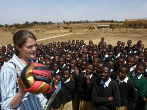

Unsere Geschichte
Wie aus einem Brief eine Bewegung wurde.
1996 ging Margit Schnee, zusammen mit einer weiteren jungen Frau, als Missionarin auf Zeit für ein knappes Jahr nach Dareda in Tansania, um in einem sozialen Projekt mitzuarbeiten. Dort arbeitete sie in einem Kindergarten, der von der Diözese Mbulu betrieben wurde.
Sie bereitete sich in Kursen des Pallottiner-Ordens gut vor, lernte Suaheli und die Sitten und Gebräuche des Landes kennen.